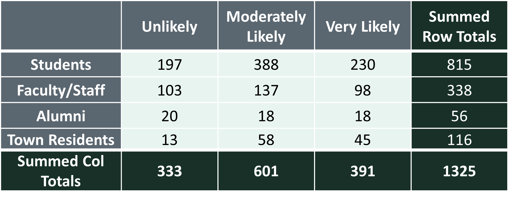
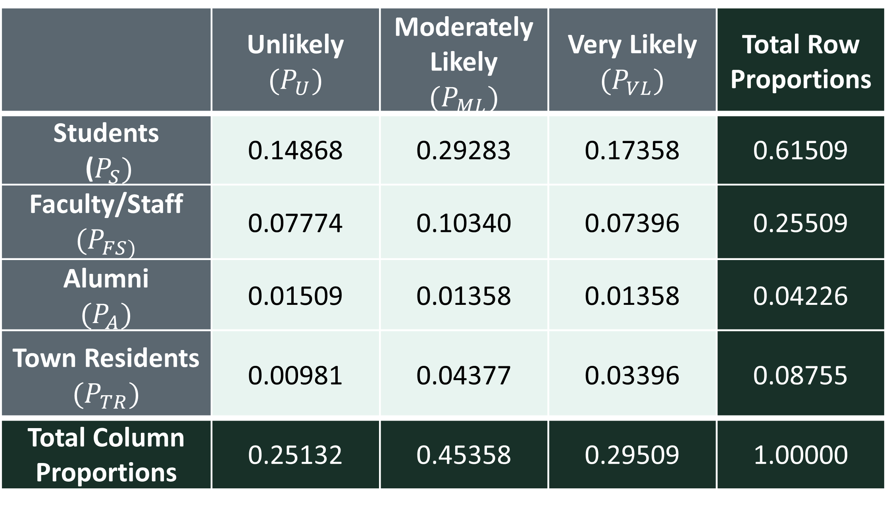

####################################
# Project name: Computing and Interpreting Chi-Square
# Data used: stem.csv, and stemGOF from Blackboard
# Libraries used: N/A
####################################7 Contingency Tables and Chi-Squared
- The goal of this lesson is to teach you probability calculations via contingency tables. We will also conduct our first hypothesis tests, which is the chi-squared test for independence and the chi-squared test of goodness of fit.
7.0.1 At a Glance
- In order to succeed in this section, you will need to learn how to create and calculate probability inside a contingency table, when we have two categorical variables, and conduct our first hypothesis test, the chi-squared test of independence. In your homework assignment for this chapter, you will put these skills into practice.
7.0.2 Lesson Objectives
- Compute probability regarding two categorical variables inside contingencies tables.
- Calculate and interpret the chi-squared statistic for the test of independence.
- Calculate and interpret the chi-squared statistic for the goodness of fit test.
7.0.3 Consider While Reading
- In this lesson, we move from simply describing data to making inferences. We learn about contingency tables in regards to calculating probability and are able to calculate and interpret the Chi-squared statistic for the test of independence.
- As you read and listen to the materials for this lesson, pay attention to the concepts, and pay attention to how those concepts are applied. There are rules for calculating and combining probabilities that are important for you to know to solve the problem sets and to solve real-life problems. Take note of the applicability of the normal distribution, which is a major cornerstone for statistical analysis.
7.1 Contingency Tables
- A contingency table generally shows frequencies for two qualitative or categorical variables, x and y.
- Each cell represents a mutually exclusive combination of the pair of x and y values.

- Note that each cell in the contingency table represents a frequency.
- In the above table, 174 customers under the age of 35 purchased an Under Armour product.
- 54 customers at least 35 years old purchased an Under Armour product.
- The contingency table may be used to calculate probabilities using relative frequency.
- First obtain the row and column totals.
- Sample size is equal to the total of the row totals or column totals. In this case, n = 600.
7.1.1 Probability Rules
- The addition rule refers to the probability that event A or B occurs, or that at least one of these events occurs, is the following:
\[P(A \cup B) = (P(A) + P(B) - P(A \cap B)\] - The complement rule refers to the probability of the complement of an event, \(P(A^c)\) is equal to one minus the probability of the event.
\[P(A^c) = 1-P(A)\] - Conditional probability refers to the probability of an event given that another event has already occurred.
- Given two events A and B, each with a positive probability of occurring, the probability that A occurs given that B has occurred (A conditioned on B) is equals to \(P(A|B) = (P(A \cap B)/P(B)\). Similarly, the probability that B occurs given that A has occurred (B conditioned on A) is equal to \(P(B|A) = (P(B \cap A)/P(A)\).
- Marginal probability refers to the probability of an event occurring \((P(A))\), it may be thought of as an unconditional probability. It is not conditioned on another event.
- The joint probability rule is determined by dividing each cell frequency by the grand total. Joint probability refers to the statistical measure that calculates the likelihood of two events occurring together and at the same point in time.
\[P(A \cap B)\]- For example, the probability that a randomly selected person is under 35 years of age and makes an Under Armour purchase is \(P(U35 \cap UA)=174/600= .29\)
- For example, this Venn Diagram illustrates the sample space for events A and B.
- The union of two events (\(A \cup B\)) is the event consisting of all simple events in A or B.
The intersection of two events (\(A \cap B\)) consists of all simple events in both A and B.
- The complement of event A (i.e., \(A^c\)) is the event consisting of all simple events in the sample space S that are not in A.
7.1.2 Summary Measures for a Random Variable
- The Summary Measures of a Random Variable are consistent with our discussion of Probability in the last lesson. They are copied back here for ease of reference.
7.1.2.1 Expected Value
- We can calculate the expected value, or value we think is going to occur based on the type of distribution.
- Expected value is also known as the population mean \(\mu\), and is the weighted average of all possible values of \(X\).
- More specifically, \(E(X)\) is the long-run average value of the random variable over infinitely many independent repetitions of an experiment.
- For a discrete random variable \(X\) with values \(x_1, x_2, x_3, ...\) that occur with probabilities \(P(X=x_i)\), the expected value of \(X\) is the probability weighted average of the values. In the case of one random variable, that means: \[E(X) = \mu = \sum{x_iP(X=x_i)} = n*p\]
7.1.2.2 Variance
- Variance of a random variable is the average of the squared differences from the mean.
- For a discrete random variable \(X\) with values \(x_1, x_2, x_3, ...\) that occur with probabilities \(P(X=x_i)\), the variance is defined as: \[Var(X) = \sigma^2 = \sum{(x_i-\mu)^2*P(X=x_i)} = n*p*(1-p)\]
7.1.2.3 Standard Deviation
- Standard deviation is consistently the square root of the variance. \[SD(X) = \sigma = \sqrt{\sigma^2} = \sqrt{\sum{(x_i-\mu)^2*P(X=x_i)}}= \sqrt{np*(1-p)}\]
7.1.3 Calculating Probability
- We could calculate the statistics in this contingency table a couple of ways. First, we could manually calculate it like below.
## Calculate Totals
TotalUnder35 <- 174 + 132 + 90
TotalUnder35 ##Total under 35 age group[1] 396Total35up <- 54 + 72 + 78
Total35up ## Total 35 and older[1] 204TotalUA <- 174 + 54
TotalUA ## Total Under Armour[1] 228TotalNike <- 132 + 72
TotalNike ## Total Nike[1] 204TotalAdidas <- 90 + 78
TotalAdidas ## Total Adidas[1] 168Total <- 174 + 132 + 90 + 54 + 72 + 78
Total ##Grand Total [1] 600- Alternatively, we could make this a matrix and use the matrix command to help us calculate the answer. This gives us all the statistics with a couple of functions and allows us to interpret from there after selecting the right information from the output.
# Put observed values in a vector by row.
x <- c(174, 132, 90, 54, 72, 78)
# Turn the vector into a matrix. In this case, we had 2 rows, 3
# columns, and entered the data by row.
o <- matrix(x, 2, 3, byrow = TRUE)
o [,1] [,2] [,3]
[1,] 174 132 90
[2,] 54 72 78# Next, we could add the names of the columns and rows values using
# the dimnames() command.
dimnames(o) <- list(c("Under 35", "35 and Older"), c("Under Armour", "Nike",
"Adidas"))
o Under Armour Nike Adidas
Under 35 174 132 90
35 and Older 54 72 78# We can easily calculate the total from here.
total <- sum(o)
total[1] 600rowsums <- margin.table(o, 1)
rowsums Under 35 35 and Older
396 204 colsums <- margin.table(o, 2)
colsumsUnder Armour Nike Adidas
228 204 168 prob <- prop.table(o)
prob # each cell represents a joint probability Under Armour Nike Adidas
Under 35 0.29 0.22 0.15
35 and Older 0.09 0.12 0.13rowprob <- margin.table(prob, 1)
rowprob #each value represents marginal probability Under 35 35 and Older
0.66 0.34 colprob <- margin.table(prob, 2)
colprob #each value represents marginal probabilityUnder Armour Nike Adidas
0.38 0.34 0.28 - Take note that when subsetting from the matrix we created above, the dimnames do not serve as a column or row. so the first number is in row 1, column 1. This is distinct from data.frames, which typically have the 1st column designated for the labels.
prob[1, 1] #corresponds to the joint probability value associated with Row 1 (Under 35), Col 1 (Under Armour)[1] 0.29Once we do our calculations our totals, we can ask probability questions.
When looking up an answer to the question, it makes it easier to reference the tables to ensure you are subsetting correctly.
o Under Armour Nike Adidas
Under 35 174 132 90
35 and Older 54 72 78prob Under Armour Nike Adidas
Under 35 0.29 0.22 0.15
35 and Older 0.09 0.12 0.13- If a person is under 35, what is the probability they will select Under Armour? \[P(UA|under35) = (P(UA \cap under35)/P(under35))\]
# This is a conditional probability question.
174/396 #or[1] 0.4393939prob[1, 1]/rowprob[1] Under 35
0.4393939 - What is the probability of a person 35 or older randomly selecting Nike? \[P(N|older35) = (P(N \cap older35)/P(older35))\]
# This is a conditional probability question.
72/204 # or[1] 0.3529412prob[2, 2]/rowprob[2]35 and Older
0.3529412 - If the chance the preference was the same regardless of condition, how many people would you expect to select Nike? \[Ex(Nike)\]
# This is a expected value question.
TotalNike # or[1] 204colsums[2]Nike
204 - We can calculate summary measures based on a variable category.
# E(X) of 35 Years or older (formula n*p)
n <- total
n #600[1] 600p <- rowprob[2]
p #.3435 and Older
0.34 n * p #Or simply the frequency for the column 35 and older35 and Older
204 # Var(X) (formula n*p*(1-p))
varx <- n * p * (1 - p)
varx #134.6435 and Older
134.64 # SD(X) (formula sqrt of variance)
sdx <- sqrt(varx)
sdx #11.60345 35 and Older
11.60345 7.1.4 Larger Contingency Table
- The survey question asked participants in multiple groups the following question, “How likely are you to participate in the event in the future?”
- In order to answer this question, first, lets bring in some data and calculate totals.

x <- c(197, 388, 230, 103, 137, 98, 20, 18, 18, 13, 58, 45)
o <- matrix(x, 4, 3, byrow = TRUE)
o [,1] [,2] [,3]
[1,] 197 388 230
[2,] 103 137 98
[3,] 20 18 18
[4,] 13 58 45dimnames(o) <- list(c("Students", "Faculty/Staff", "Alumni", "Town Residents"),
c("Unlikely", "Moderately Likely", "Very Likely"))
o Unlikely Moderately Likely Very Likely
Students 197 388 230
Faculty/Staff 103 137 98
Alumni 20 18 18
Town Residents 13 58 45total <- sum(o)
total[1] 1325rowsums <- margin.table(o, 1)
rowsums Students Faculty/Staff Alumni Town Residents
815 338 56 116 colsums <- margin.table(o, 2)
colsums Unlikely Moderately Likely Very Likely
333 601 391 # Lets add the grand total to the colsums
colsums <- c(colsums, total)
colsums Unlikely Moderately Likely Very Likely
333 601 391 1325 - In this example, we can bind the data together so that it is a little easier to see. Examine the final table and compare that to the figure above.
totals <- cbind(o, rowsums)
totals Unlikely Moderately Likely Very Likely rowsums
Students 197 388 230 815
Faculty/Staff 103 137 98 338
Alumni 20 18 18 56
Town Residents 13 58 45 116totals <- rbind(totals, colsums)
totals Unlikely Moderately Likely Very Likely rowsums
Students 197 388 230 815
Faculty/Staff 103 137 98 338
Alumni 20 18 18 56
Town Residents 13 58 45 116
colsums 333 601 391 1325
- Next, let’s calculate probabilities.
prob <- prop.table(o)
prob Unlikely Moderately Likely Very Likely
Students 0.148679245 0.29283019 0.17358491
Faculty/Staff 0.077735849 0.10339623 0.07396226
Alumni 0.015094340 0.01358491 0.01358491
Town Residents 0.009811321 0.04377358 0.03396226TotalRowProb <- margin.table(prob, 1)
TotalRowProb Students Faculty/Staff Alumni Town Residents
0.61509434 0.25509434 0.04226415 0.08754717 TotalColProb <- margin.table(prob, 2)
TotalColProb Unlikely Moderately Likely Very Likely
0.2513208 0.4535849 0.2950943 TotalColProb <- c(TotalColProb, sum(TotalColProb))
TotalColProb Unlikely Moderately Likely Very Likely
0.2513208 0.4535849 0.2950943 1.0000000 - In this example, we can also bind the data together so that it is a little easier to see. Again, we are trying to get our R code in the best shape to be able to select the right information to calculate probability from it.
proportions <- cbind(prob, TotalRowProb)
proportions Unlikely Moderately Likely Very Likely TotalRowProb
Students 0.148679245 0.29283019 0.17358491 0.61509434
Faculty/Staff 0.077735849 0.10339623 0.07396226 0.25509434
Alumni 0.015094340 0.01358491 0.01358491 0.04226415
Town Residents 0.009811321 0.04377358 0.03396226 0.08754717proportions <- rbind(proportions, TotalColProb)
proportions Unlikely Moderately Likely Very Likely TotalRowProb
Students 0.148679245 0.29283019 0.17358491 0.61509434
Faculty/Staff 0.077735849 0.10339623 0.07396226 0.25509434
Alumni 0.015094340 0.01358491 0.01358491 0.04226415
Town Residents 0.009811321 0.04377358 0.03396226 0.08754717
TotalColProb 0.251320755 0.45358491 0.29509434 1.00000000Now that our tables have been tabulated, we can answer some probability questions.
What proportion of Students participated in the survey?
\(P_S= 815/1325\) or \(0.61509434\)What proportion of Faculty/Staff remarked that they were Unlikely to participate?
\(P(U|FS) = P(U \cap FS) / P(FS) = 103/338 = 0.077735849/0.25509434 = 0.3047337\)If a person is a Town Resident, what is the probability that they will select Very Likely?
\(P(VL|TR) = P(VL \cap TR) / P(TR) = 45/116 = 0.03396226/0.08754717 = 0.387931\)What proportion of people would you expect to select Moderately Likely?
\(P_ML = 601/1325\) or \(0.4535849\). What is the expected number? \(E(ML) = 601\).What is the probability that a randomly selected person is a Faculty/Staff or selects Very Likely?
\(P_FS + P_VL - P_FS \cup P_VL = 0.25509434 + 0.2950943 − 0.07396226 = 0.4762264\)
# E(X) of Moderately Likely (formula n*p)
n = total
n #1325[1] 1325p = TotalColProb[2]
p #.45358Moderately Likely
0.4535849 n * p #Or simply the frequency for the column Moderately LikelyModerately Likely
601 # Var(X) (formula n*p*(1-p))
varx <- n * p * (1 - p)
varx #328.3955Moderately Likely
328.3955 # SD(X) (formula sqrt of variance)
sdx <- sqrt(varx)
sdx #18.12Moderately Likely
18.12169 7.2 Chi-Squared Test for Independence
Broadly, the test for independence tests whether or not two variables whose frequencies are represented in a contingency table have statistical independence from one another.
A test of independence – also called a chi-square test of a contingency table – is used to analyze the relationship between two qualitative variables.
Broadly, this test involves summing the squared differences between observed and expected values, combining the differences into an overall statistic, and then using that statistic to determine significance of the hypothesis test.
\(\chi^2 = \frac{(observed-expected)^2}{expected}\)Squaring the differences before adding them up will result in a positive value that is larger when there are larger differences and smaller when there are smaller differences. This value captures the magnitude of the difference between observed and expected values.
In order to account for situations when the observed and expected values are very large, which could result in extremely large differences between observed and expected, the squared differences are divided by the expected value in each cell.
Visualizing the Chi-squared Distribution Chi-squared distribution has a single parameter, the degrees of freedom or \(df\).
\(\sqrt(2*df)\)

- The Chi-squared probability density function shows the probability of a value of chi-squared occurring when there is no relationship between the two variables contributing to the chi-squared, where a large chi-square indicates a relationship between variables.
- The competing hypotheses can be expressed as:
- \(H_0\): The two classifications are independent.
- \(H_A\): The two classifications are dependent.

7.2.1 Steps to conduct Chi-Squared Test for Independence
- Step 1: Write the null and alternate hypotheses.
- Step 2: Compute the test statistic.
- Step 3: Calculate the probability.
- Step 4: If the probability that the null is true is very small, usually less than 5%, reject the null hypothesis OR If the probability that the null is true is not small, usually 5% or greater, retain the null hypothesis.
7.2.2 Assumptions of the Chi-Squared Test of Independence
Assumption 1: The variables must be nominal or ordinal.
Assumption 2: The expected values should be 5 or higher in at least 80% of groups.
Assumption 3: The observations must be independent.
Note that there are a couple of ways observations can be non-independent.
- One way to violate this assumption would be if the data included the same set of people before and after some intervention or treatment.
- Another way to violate this assumption would be for the data to include siblings or parents and children or spouses or other people who are somehow linked to one another.
- Since people who are linked to each other often have similar characteristics, statistical tests need to be able to account for this and the chi-squared test does not.
7.2.3 Example of a Test for Independence
- Step 1: Set up the Hypothesis
- \(H_0\): Age group and Brand Name are independent.
- \(H_A\): Age group and Brand Name are dependent.
- First, we bring in the data manually from the table by column. We had 3 columns, so we need to make three vectors as shown below.
UA <- c(174, 54)
N <- c(132, 72)
A <- c(90, 78)- Then we convert these columns to a data frame. If you already have a data frame, you don’t have to do this step.
M <- data.frame(UA, N, A)
M UA N A
1 174 132 90
2 54 72 78Always make sure your data frame looks like the table.
Steps 2 and 3: Compute the test statistic and calculate the probability.
Here, we run the chisq.test() command, which only includes the columns of interest.
chisq.test(M)
Pearson's Chi-squared test
data: M
X-squared = 22.529, df = 2, p-value = 1.282e-05- Step 4: If the probability that the null is true is very small, usually less than 5%, reject the null hypothesis versus If the probability that the null is true is not small, usually 5% or greater, retain the null hypothesis.
- Here, our p-value is 1.282e-05, so we reject the null, \(H_0\), and conclude that Age group and Brand Names are dependent.
7.2.4 Example Using an Imported Dataset
- Import the STEM data into a data frame (table) into R.
- Step 1: Set up the Hypothesis:
- \(H_0\): Stem field and Gender are independent.
- \(H_A\): Stem field and Gender are dependent.
STEM <- read.csv("data/stem.csv")
STEM STEM.field Female Male
1 Sciences 120 100
2 Technology 15 75
3 Engineering 30 125
4 Math 15 20- Steps 2 and 3: Compute the test statistic and calculate the probability.
- Again, we use Rs chisq.test() command to calculate the value of the test statistic, as well as the p-value. Within the chisq.test() function, we indicate that the relevant data are in columns 2 and 3 of the data frame.
chisq.test(STEM[, 2:3])
Pearson's Chi-squared test
data: STEM[, 2:3]
X-squared = 66.795, df = 3, p-value = 2.072e-14- Step 4: If the probability that the null is true is very small, usually less than 5%, reject the null hypothesis versus If the probability that the null is true is not small, usually 5% or greater, retain the null hypothesis.
- Since the p-value is less than 0.05, we can reject the null hypothesis. At the 5% significance level, we can conclude that one’s sex does influence field choice within the STEM major.
7.3 Chi-Squared Goodness of Fit Test
There are a few other tests regarding a Chi-squared distribution, and one other is the goodness of fit test.
This test determines whether two or more population proportions equal each other or any predetermined set of values and like the test for independence, still involves the fit between observed and estimated values.
A multinomial experiment consists of a series of n independent trials such that:
On each there are k possible outcomes.
The probability of falling into category \(i\) is the same on each trial.
The \(k\) probabilities sum to \(1:p_1 + p_2 +⋯+p_k = 1\)
The null hypothesis: the population proportions are equal to one another or they are each equal to a specific value.
For example, are four candidates in an election equally favored by voters?
Equal Population proportions:
\(H_0: P_1=P_2=P_3=P_4=.25;\)
\(H_A\):Not all populations are equal to .25Or, do people rate food quality in a restaurant comparably to last year?
Unequal Population Proportions:
\(H_0: P_1= .4, P_2=.3, P_3= .2, P_4=.1;\)
\(H_A:\) At least one \(P_i\) differs from its hypothesized value.
7.3.1 Example Using Raw Numbers
Last year the management at a restaurant surveyed its patrons to rate the quality of its food. The results were as follows: 15% Excellent; 30% Good; 45% Fair; and 10% Poor.
Based on this and other survey results, management made changes to the menu.
This year, the management surveyed 250 patrons, asking the same questions about food quality. Here are the results: 46 Excellent; 83 Good; 105 Fair; and 16 Poor.
We want to know if the current results agree with those from last year, or if there has been a significant change.
To do this, we compute an expected frequency for each category and compare it to what we actually observe. Then, we compute the difference between what was observed and expected for each category. If the results this year are consistent with last year, these differences will be relatively small.
The steps are same as the Chi-Squared Test of Independence.
Step 1: Set up the Hypothesis:
- \(𝐻_0\): Each proportion equals a hypothesized value.
- \(𝐻_A\): Not all proportions equal their hypothesized values.
Steps 2 and3: Compute the test statistic and calculate the probability.
We can use R’s chisq.test() function to calculate the value of the test statistic and corresponding p-value. Within this function, we use the option p to indicate the location of the hypothesized proportions.
# Chi Squared Test Goodness of Fit
o <- c(46, 83, 105, 16)
p <- c(0.15, 0.3, 0.45, 0.1)
chisq.test(o, p = p)
Chi-squared test for given probabilities
data: o
X-squared = 6.52, df = 3, p-value = 0.08888Note that p= is required here because it is not the second argument in the chisq.test() command.
Step 4: If the probability that the null is true is very small, usually less than 5%, reject the null hypothesis versus If the probability that the null is true is not small, usually 5% or greater, retain the null hypothesis.
At alpha = .05, we do not reject \(H_0\) and cannot conclude that the proportions differ from the ones a year ago.
7.3.2 Example Using an Imported Dataset
- The steps are same as the Chi-Squared Test of Independence.
- Step 1: Set up the Hypothesis:
- \(𝐻_0\): Each proportion equals a hypothesized value.
- \(𝐻_A\): Not all proportions equal their hypothesized values.
- Steps 2 and 3: Compute the test statistic and calculate the probability.
- First, we import the stemGOF.csv data into a data frame (table) in R.
- Then, again, we use Rs chisq.test function to calculate the value of the test statistic and the p-value. Within the chisq.test function, we use the option p to indicate the location of the hypothesized proportions.
STEMGOF <- read.csv("data/stemGOF.csv")
STEMGOF Major X2010Proportions RecentNumbers
1 Business 0.19 80
2 Education 0.09 35
3 Healthcare 0.12 85
4 Social Sciences 0.22 105
5 STEM 0.08 55
6 Other 0.30 140chisq.test(STEMGOF$RecentNumbers, p = STEMGOF$X2010Proportions)
Chi-squared test for given probabilities
data: STEMGOF$RecentNumbers
X-squared = 21.526, df = 5, p-value = 0.0006441- Step 4: If the probability that the null is true is very small, usually less than 5%, reject the null hypothesis versus If the probability that the null is true is not small, usually 5% or greater, retain the null hypothesis.
- Since our p-value is 0.0006441, we reject \(H_0\) and conclude that the proportions differ at the 5% significance level. In this case, that means that the recent stem numbers differ from the 2010 values.
7.4 Summary
- In this lesson, we learned about contingency tables in regards to calculating probability with two categorical variables. We also computed the chi-squared statistics for the test of independence and the goodness of fit.